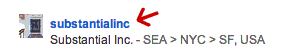

TimeFrame
requires Javascript.
loading images from
...
enter a location:
or
enter your Flickr username:
Find Flickr Username
[?]
Finding a Flickr username
Click to open link in new window.
Search for people on Flickr.com.
Usernames appear in bold text. Copy and paste into the text field.
